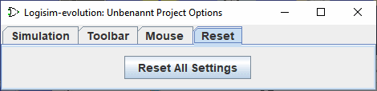

לשונית העכבר
כברירת מחדל, בעת לחיצה על העכבר באזור הציור של Logisim, הכלי שנבחר כעת ישמש. אם אתה לחץ באמצעות לחצן העכבר הימני או לחץ על Control, זה יציג תפריט מוקפץ עבור הרכיב הנוכחי מתחת לעכבר.
Logisim מאפשרת לך לשנות התנהגות זו, פוטרת אותך מהצורך לעבור לסרגל הכלים ו/או לסייר כל הזמן. (זה עשוי להיות שימושי גם אם אתה שמאלי.) כל שילוב של כפתור עכבר ומשנה ניתן למפות מפתח (כל תת קבוצת shift, control ו-alt) ל- כלי שונה. הכרטיסייה Mouse מאפשרת לך להגדיר את המיפויים הללו.
-
בצד שמאל נמצא סייר שבו אתה יכול לבחור את הכלי שברצונך למפות.
-
בצד הימני העליון יש מלבן שבו אתה יכול ללחוץ באמצעות שילוב העכבר שאתה רוצה נְקִישָׁה. לדוגמה, אם ברצונך ליצור חוטים חדשים על ידי גרירת Shift, תחילה עליך לבחור את כלי חיווט בסייר (תחת ספריית הבסיס); ואז היית Shift-click שבו כתוב "לחץ על שימוש בשילוב כדי למפות את כלי החיווט." אם זה השילוב כבר נמצא בשימוש, אז המיפוי יוחלף בכלי החדש.
-
מתחת לאזור זה יש רשימה של מיפויים נוכחיים. שים לב שכל השילובים שאינם רשומים פשוט משתמשים הכלי שנבחר כעת.
-
להלן הלחצן הסר, שבו תוכל למחוק את המיפוי שנמצא כעת נבחר בטבלה שמעל הכפתור. בעתיד, אם כן, שילוב העכבר הזה ימפה ל כל כלי שנבחר כעת בסרגל הכלים או בחלונית הסייר.
-
להלן רשימה של תכונות לכלי שנבחר כעת ברשימת המיפויים. כל אחד לכלי ממופה עכבר יש קבוצת תכונות משלו, השונה מהתכונות המשמשות בחלונית הסייר ובסרגל הכלים. אתה יכול לערוך את ערכי המאפיינים האלה כאן.
לשונית איפוס

הכרטיסייה הזו פשוטה מאוד. שימוש רק בלחצן איפוס לדגם יאפס את כל ההגדרות ל הגדרת הדגם שהוגדרה בכרטיסיית התבנית.
הבא: מדריך למשתמש .